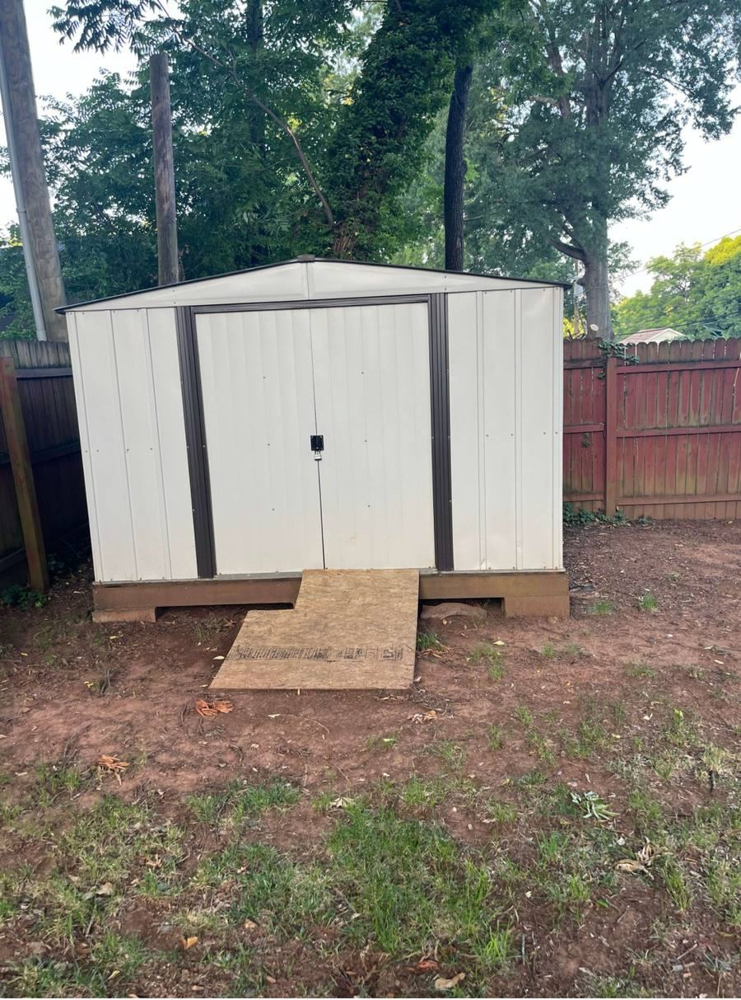

¿Cuánto cuesta un handyman en Charlotte, NC?
Precios actualizados
El trabajo de handyman y armado se cobra a $70 por hora con mínimo de dos horas, así que $140 es lo mínimo. Después de las primeras dos horas, el reloj corre en bloques de 30 minutos, así que una visita de dos horas y media cuesta $175 y una de tres horas $210. Si prefieres no estar viendo el reloj, pide una cotización fija por trabajo y le ponemos precio a todo junto.
El mínimo de dos horas se queda en $140 los fines de semana. No sube en sábado ni domingo. Los trabajos chicos de handyman y armado son justo con los que queremos llenar el fin de semana, así que el precio de fin de semana es el mismo que entre semana.
Algunos trabajos de verdad necesitan dos personas, y esos cuestan $135 por hora con mínimo de dos horas, $270. El mínimo de fin de semana para dos personas es de tres horas, o sea $405, así que si el trabajo se puede hacer con una persona casi siempre sale más barato así. Lo típico de dos personas es una cama abatible anclada a la estructura, un ropero pesado que hay que subir antes de armarlo, o un juego infantil grande que se arma afuera.
Si un trabajo necesita un tráiler para llevar material o sacar los empaques, el tráiler abierto suma +$35 por hora y el cerrado de 16 pies +$60 por hora.
- Una persona: $70/hora, mínimo 2 horas ($140), luego bloques de 30 minutos
- Mínimo de una persona en fin de semana: sigue en $140, sin cargo de fin de semana
- Equipo de dos personas: $135/hora, mínimo 2 horas ($270); en fin de semana el mínimo es de 3 horas ($405)
- Escaleras: +$25 por piso arriba del primero
- Artículo pesado o difícil: desde +$40
- El mismo día o de emergencia: +$40
- Tráiler si hace falta: abierto +$35/hora, cerrado de 16 pies +$60/hora
Algunos trabajos tienen su propio precio fijo en vez de la tarifa por hora, porque son lo bastante predecibles para cotizarse por unidad. La instalación de ventilador de techo cuesta $140 por ventilador y cada ventilador adicional en la misma visita lleva 10% menos ($126 c/u). La instalación de lámparas colgantes o de techo cuesta $100 c/u sobre cableado que ya existe, y cada lámpara adicional en la misma visita lleva 10% menos ($90 c/u). Ventiladores y lámparas se cuentan aparte, así que el primer ventilador y la primera lámpara se cobran a precio completo. Si la caja del techo no aguanta el peso de un ventilador, cambiarla por una caja para ventilador cuesta $100 por lugar. La instalación de barras de cortina cuesta $50 por barra cuando va junto con otro servicio contratado, con barras y soportes que pones tú. La instalación de drywall (colgar hojas nuevas, encintar, emparejar y lijar hasta dejarlo listo para pintar) se cotiza después de verla, con un mínimo de $250 por trabajo. El drywall se mide por superficie (paredes más techo, no el área del piso), así que confirmamos los pies cuadrados contigo antes de empezar. Los parches y reparaciones chicas de drywall se quedan en la tarifa normal de handyman de $70/hora.
- Instalación de ventilador de techo: $140 por ventilador, 10% menos cada ventilador adicional en la misma visita
- Instalación de lámpara colgante o de techo: $100 c/u sobre cableado existente, 10% menos cada lámpara adicional en la misma visita
- Cambio a caja para ventilador (cuando la caja actual no aguanta un ventilador): $100 por lugar
- Instalación de barras de cortina: $50 por barra, junto con otro servicio contratado, barras que pones tú
- Instalación de drywall (hojas nuevas, encintadas y lijadas listas para pintar): se cotiza después de verla, mínimo $250; se mide por la superficie de paredes y techo, no por el área del piso
- Parches y reparación de drywall: se quedan en la tarifa de handyman de $70/hora
¿Qué trabajos de handyman y armado hacen?
Lo principal es armado, montaje y trabajos chicos de instalación, todo a la misma tarifa de $70 por hora con el mínimo de $140. Los muebles para armar son la llamada más común: tocadores, camas, escritorios, comedores, muebles para TV, sillas de oficina. Los armados más grandes son los que más vale la pena delegar, porque son los que se comen toda una tarde si los haces tú. Roperos con puertas corredizas, literas, camas altas, camas abatibles, juegos infantiles del patio, racks de gimnasio en casa, máquinas de poleas y caminadoras entran en ese grupo.
La otra mitad es guardar y montar. Repisas flotantes que tienen que ir en las vigas, sistemas completos de clóset, organizadores de pared en el garaje, racks de techo, espejos, cuadros, paredes de galería, barras de cortina, persianas, pizarrones y rejas para bebé arriba y abajo de una escalera.
Luego está la lista de reparaciones y cambios chicos. Llaves de agua, asientos de inodoro, chapas de puertas, jaladeras y perillas de gabinetes, burletes y barredores de puerta se cobran por hora. Los ventiladores de techo, las lámparas y las barras de cortina tienen precio fijo por unidad: $140 por ventilador, $100 por lámpara, $50 por barra. Las puertas que se atoran o no cierran, los cajones que ya no cierran, las puertas de gabinetes chuecas, los parches chicos de drywall, el sellado alrededor de una tina o un backsplash y los detalles menores de molduras también se cobran por hora; colgar y terminar hojas nuevas de drywall se cotiza aparte.
Las listas de pendientes son bienvenidas y normalmente son el mejor uso del mínimo. La gente nos contrata antes de una inspección de salida, antes de tomar fotos para vender o antes de una inspección de la casa, nos da una lista de once cosas chicas, y las vamos haciendo en orden de lo que más importa.
- Armado de muebles, incluidos roperos, literas, camas abatibles, juegos infantiles, equipo de gimnasio y caminadoras
- Repisas, repisas flotantes, sistemas de clóset, organizadores de garaje y racks de techo
- Montaje de espejos, cuadros, barras de cortina, persianas, pizarrones y rejas para bebé
- Cambios de accesorios: lámparas, llaves de agua, asientos de inodoro, chapas, jaladeras de gabinetes, burletes
- Instalación de ventilador de techo: $140 por ventilador, 10% menos cada ventilador adicional en la misma visita
- Puertas que se atoran, cajones que no cierran, puertas de gabinetes desalineadas
- Parches chicos de drywall, sellado y detalles menores de molduras (la instalación completa de drywall se cotiza aparte, ver tarifas)
- Listas de pendientes para entregar una renta, para fotos de venta o antes de una inspección
¿Cómo le saco provecho al mínimo de dos horas?
Pagas dos horas ($140) las uses o no, así que lo más útil que puedes hacer es juntar trabajos. Un tocador toma unos 45 minutos. Ya pagaste los otros 75 minutos, así que llénalos. Recorre la casa antes de llamar, apunta cada cosa chica que has estado ignorando y manda esa lista al agendar.
Agrupa por cuarto y por herramienta. Todo lo que necesita detector de vigas y taladro en la pared va en un bloque: TV, espejos, cuadros, repisas, barras de cortina, rejas para bebé. Todo lo que necesita desarmador y llave allen va en otro: armado, jaladeras, chapas, ajuste de bisagras. Todo lo que necesita sellador y espátula va en un tercero. Ordenar así la lista ahorra tiempo de verdad, porque las herramientas se quedan afuera y la escalera no se mueve.
Pon la lista en orden de prioridad y dilo. Si la visita se alarga, hacemos primero lo de arriba de tu lista y paramos donde se acaba el tiempo, en vez de terminar lo menos importante y dejar lo que sí importaba. Si terminamos todo antes, igual se cobra el mínimo de dos horas, así que es mejor tener una cosa de más en la lista que una de menos.
Una idea realista de lo que cabe en dos horas: más o menos un mueble grande para armar, o de tres a cinco montajes chicos, o una lista variada de seis a ocho cosas rápidas. Un ropero con puertas corredizas de espejo, una litera o una caminadora normalmente se llevan las dos horas completas.
- Agrupa por herramienta, no por el orden de los cuartos: primero todo lo de taladro, luego todo el armado, luego todo el sellado y los parches
- Manda la lista completa al agendar para que lleguen las herramientas y la escalera correctas
- Ordena la lista, lo más importante primero, para que el tiempo vaya a lo que importa
- Junta horas de handyman con trabajo de precio fijo en la misma visita: montaje de TV desde $99 hasta 60 pulgadas, retiro de basura desde $95 por un solo artículo
- Dos horas son más o menos un armado grande, o de tres a cinco montajes, o de seis a ocho cosas rápidas
¿Qué necesito tener a la mano antes de que lleguen?
Ten el artículo en la casa, puede estar sin abrir, y en el cuarto donde va a quedarse. El tiempo de subir cajas por la escalera se cobra a los mismos $70 por hora que el armado, y las escaleras arriba del primer piso suman $25 por piso. Si la caja sigue en el garaje y la cama va en una recámara de arriba, ese tiempo va en tu cuenta.
Para cambiar un accesorio, el accesorio tiene que estar ahí. No vamos a comprar piezas como parte de la mano de obra. Compra el ventilador, la llave de agua, el asiento del inodoro, la chapa, las jaladeras. Cuenta las jaladeras dos veces, porque en una cocina con 34 puertas y cajones es donde a la gente le faltan tres y el trabajo se detiene.
La tornillería para montar es el otro atorón común. Casi todos los muebles traen lo que necesitan, pero el trabajo en pared muchas veces no. Las repisas flotantes, los espejos pesados, los soportes de TV y los racks de garaje muchas veces vienen sin anclas para la pared que de verdad tienes. Dinos qué pared es al agendar: drywall sobre vigas de madera, drywall sobre vigas de metal, yeso, ladrillo o block. Eso cambia las anclas y cambia cuánto tarda el trabajo.
Por último, despeja el área de trabajo y encierra al perro. Separa los burós de la pared, baja los cuadros de la pared donde vamos a trabajar y deja el piso libre para armar. Un cuarto listo muchas veces son de 20 a 30 minutos que no pagas.
- El artículo, el accesorio y las piezas, en el cuarto donde van
- Toda la tornillería contada, incluidas jaladeras o perillas de más
- Tipo de pared conocido y dicho al agendar: drywall, viga de metal, yeso, ladrillo o block
- Anclas para esa pared si el producto no las trae
- Área de trabajo despejada, piso libre, mascotas encerradas
¿Qué trabajos necesitan un oficio con licencia en vez de un handyman?
Hay una lista corta que no tocamos, y es mejor saberla antes de agendar que después. Circuitos eléctricos nuevos, trabajo en el tablero y los breakers, líneas de gas, plomería dentro de la pared, techos, estructura y aire acondicionado y calefacción necesitan un oficio con licencia en Carolina del Norte. Si tu trabajo está en esa lista, te lo decimos por teléfono y debes llamar directo a un contratista eléctrico o de plomería.
La línea en lo eléctrico es más sencilla de lo que la gente cree. Cambiar una lámpara, un ventilador de techo o una tapa de apagador sobre cableado que ya existe es trabajo normal de handyman. Tender cable nuevo, agregar un circuito, mover o agregar un contacto, cambiar un breaker o tocar el tablero es trabajo de contratista eléctrico con licencia en Carolina del Norte y lo debe hacer un contratista eléctrico con licencia que saque el permiso.
La plomería funciona igual. Cambiar una llave de agua, una manguera de alimentación, un asiento de inodoro, una regadera o un triturador de basura sobre conexiones existentes es un cambio. Abrir una pared, modificar líneas de drenaje o ventilación, mover un calentador de agua, soldar tubería o cualquier cosa que necesite permiso es trabajo de plomería con licencia.
En cuanto a contratista general, Carolina del Norte pide licencia de contratista general para obras de $40,000 o más. El trabajo normal de handyman y armado queda muy por debajo de eso, y por eso es legal que lo haga alguien sin esa licencia. No tenemos licencia de contratista general, eléctrica ni de plomería y no decimos que la tengamos. Nos quedamos dentro de lo que de verdad es trabajo de handyman.
Si no estás seguro de qué lado de la línea está tu trabajo, descríbelo por teléfono. Preguntar no cuesta nada, y nos ahorra a los dos una tarde perdida.
- Fuera de lo que hacemos: circuitos nuevos, trabajo en el tablero o breakers
- Fuera de lo que hacemos: líneas de gas de cualquier tipo
- Fuera de lo que hacemos: plomería dentro de la pared, cambios en drenaje y ventilación, mover el calentador de agua
- Fuera de lo que hacemos: techos, trabajo estructural y aire acondicionado o calefacción
- Sí lo hacemos: cambiar accesorios por otros iguales sobre cableado y conexiones de plomería existentes
¿Cómo agendo, y cuánto cuesta que lleguen a mi dirección?
Llama o manda texto al 704-237-0164 con tu lista y tu dirección. El viaje ya está incluido en el número que cotizamos: un solo precio por el trabajo, no un precio más un cargo por el viaje. El precio se confirma antes de empezar, y cubrimos 16 ciudades del área de Charlotte en Carolina del Norte y del Sur desde nuestra base en Steele Creek.
Muchas veces tenemos espacio el mismo día, aunque nunca está garantizado. El servicio el mismo día o de emergencia es +$40. Los fines de semana están abiertos y el mínimo de dos horas con una persona es el mismo de $140 que entre semana, así que una lista un sábado en la mañana es una cita normal, no una más cara.
Efectivo, cheque y Zelle no tienen cargo. Con tarjeta hay un 3.5% de procesamiento. Cancelar es gratis con 24 horas de aviso; con menos de 24 horas, o si llegamos y la propiedad está cerrada o vacía, puede haber un cargo de $50 por el viaje.
Respondemos por nuestro trabajo: si algo que instalamos falla por cómo lo instalamos, regresamos y lo arreglamos sin costo. Eso no cubre materiales de terceros ni el desgaste normal, así que un soporte de repisa que se rompe porque no aguantaba la carga es un problema del material, no de la instalación.
Mount N Muscle es atendido por su dueño y tiene 5.0 estrellas con más de 100 reseñas en Google. Nuestro programa de referidos Amigos y Vecinos le da $25 de crédito a quien te recomendó y te quita $25 de tu primer servicio.